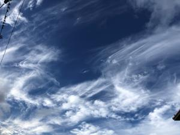
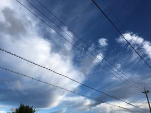
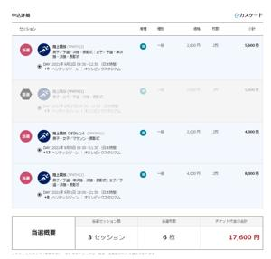
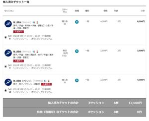

うるがいの話 ある日
最新:
パラリンピックの払い戻し
うるがいとは 前提知識です
カニの画像をクリックすると『うるがいの話』サイトを表示します

|
うるがい(ｳﾙｶﾞｲ urugai)とは、『もずくがに』の名前でとても大きくなります。
|

|
たながー（ﾀﾅｶﾞｰtanagaa）とは手長えびのことで、何種類かあり大きいのは車
エビぐらいになります。
|

|
ぶながー(bunagaa)とは、赤い髪の毛、赤い身体、そして身長は１ｍ２０ｃｍ
ぐらい、川の蟹を食べているの目撃された。場所は沖縄県国頭郡大宜味村のと
ある村僕の隣近所に住んでいる爺さんから、聞いた話です。
|
2021年08月18日 (水）パラリンピックの払い戻し
16:56




Tokyo 2020からメールがきた、チケットの払い戻しの案内である。
［東京2020］パラリンピック観戦チケットに関する重要なお知らせ
パラリンピックの観戦チケットをご購入いただいた皆さまへ
ご購入いただきました東京2020パラリンピック観戦チケットについてご案内い
たします。
8月16日の四者協議にて、「全ての競技について無観客（学校連携観戦除く）」
という方針が示されました。
この方針を受けて、学校連携観戦以外の方は、会場にご入場いただけませんの
で、ご購入いただきました全てのチケットの払い戻しをさせて頂きます。
そもそも、払い戻しってどの競技だろうと確認した。なにが残っているのだろ
うとサイトで確認した。９月２日９：３０～１２：５５オリンピックスタジア
ム 陸上競技 男子・予選・決勝・表彰式｜女子／予選・準決勝・決勝・表彰
式 （税込み６、１２０円）だった。そうか、チケットは記念に欲しかった、
お金が戻ってくるので、代わりにＳＳＤ装置１ＴＢ（１２，９２９円）をアマ
ゾンで購入する。ちかじか行われる筈のWindows10の大きなアップデートに
備えてＨＨＤからＳＳＤへの高速化とディスクの退避を行えるべきと、何処か
らか声が聞こえる。遅れていた子供の国民保険への切り替えが、昨日やっと終
えた連絡があった。それにしても事務手続きが遅い！、この影響などもあり予
定していた傷病手当の手続きも進まず、諦めたの事。私同様当面、無収入が確
定した。ま、想定の範囲内だ。ただ、国民保険に切り替えるため市役所に行っ
たが、保険料がかなり安いですよ！と言われ急いで前の会社にお願いして任意
継続健康保険に切替えた（なお、走ろう会のクブ先輩が少しこの話をしていた
ので加入への躊躇はなかった）私の場合も踏まえると、退職後の健康保険は任
意継続健康保険の方が、いいと分かった。子供の場合も一応勧められたらしい
が、ま、会社とのつながりは早く切りたいので当然断わるよな。今日も感染が
過去最高値とあった、宣言だけを来月１２日まで伸ばしても状況は変わらない
と思うが。